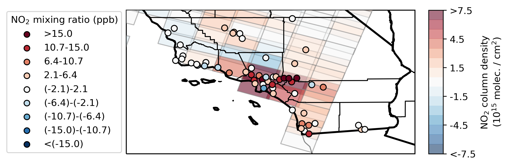

Current Projects
Constraining methane emissions & trospospheric OH with satellite observations
Come back to see more soon!
Constraining methane emissions & trospospheric OH with satellite observations
Come back to see more soon!
Past Projects
Daily cycle of NO2 from satellite and surface observations
Nitrogen oxides (NOx = NO + NO2) are trace gasses which promote formation of air pollutants including ozone and nitrate aerosols.
NOx photolyzes in the sunlight, and as a result has a strong daily cycle, with a peak in the morning and a minimum in the late afternoon.
Nitrogen oxides are observed at the surface by the sparse network of EPA AQS monitors, and NO2 in particular is observed remotely by satellite instruments including OMI, TROPOMI, and GOME-2.
The current polar-orbiting satellite instruments can only measure at a single time over each location. For example, many satellites measure at only 1pm local time, near the minimum of NO2 concentrations.
We used satellite observations from two instruments with different overpasses, GOME-2 (at ~(9:30am) and OMI (at ~1:45pm local time) to assess. We found that satellite observations show evidence of higher NO2 in the morning near large urban areas, but further analysis of urban/suburban interactions is limited by resoluton constraints.

Case study of GOME-2 (overpass ∼9:30am) compared with down-scaled OMI (overpass ∼1:45pm) over Southern California on 14 June 2007. Red colors indicate higher concentrations of NO2 in the morning, and blue colors indicate higher concentrations of NO2 in the afternoon (Penn and Holloway 2020).
Contributions to Wisconsin Horizontal Interpolation Program for Satellites (WHIPS)
WHIPS is an open-source Python package which regrids level-2 satellite data (irregular overlapping polygons) to level-3 data (gridded data). It supports a number of satellite products including NASA OMI NO2 and MOPPIT CO. I added a new regridding function based on the OMNO2d gridding algorithm, and the ability to read in KNMI GOME-2 NO2 data.
Github: Link to the WHIPS github.
Predicting wind plant power production
Penn, E. and Newman, J. A New Toolbox for Operational Wind Data. (2017) Presentation. American Meteorological Society Annual Meeting 2017. Seattle, WA. Presentation
Daily cycle of NO2 from satellite and surface observations
Nitrogen oxides (NOx = NO + NO2) are trace gasses which promote formation of air pollutants including ozone and nitrate aerosols. NOx photolyzes in the sunlight, and as a result has a strong daily cycle, with a peak in the morning and a minimum in the late afternoon. Nitrogen oxides are observed at the surface by the sparse network of EPA AQS monitors, and NO2 in particular is observed remotely by satellite instruments including OMI, TROPOMI, and GOME-2. The current polar-orbiting satellite instruments can only measure at a single time over each location. For example, many satellites measure at only 1pm local time, near the minimum of NO2 concentrations.
We used satellite observations from two instruments with different overpasses, GOME-2 (at ~(9:30am) and OMI (at ~1:45pm local time) to assess. We found that satellite observations show evidence of higher NO2 in the morning near large urban areas, but further analysis of urban/suburban interactions is limited by resoluton constraints.
Case study of GOME-2 (overpass ∼9:30am) compared with down-scaled OMI (overpass ∼1:45pm) over Southern California on 14 June 2007. Red colors indicate higher concentrations of NO2 in the morning, and blue colors indicate higher concentrations of NO2 in the afternoon (Penn and Holloway 2020).
Contributions to Wisconsin Horizontal Interpolation Program for Satellites (WHIPS)
WHIPS is an open-source Python package which regrids level-2 satellite data (irregular overlapping polygons) to level-3 data (gridded data). It supports a number of satellite products including NASA OMI NO2 and MOPPIT CO. I added a new regridding function based on the OMNO2d gridding algorithm, and the ability to read in KNMI GOME-2 NO2 data.
Github: Link to the WHIPS github.
Predicting wind plant power production
Penn, E. and Newman, J. A New Toolbox for Operational Wind Data. (2017) Presentation. American Meteorological Society Annual Meeting 2017. Seattle, WA. Presentation